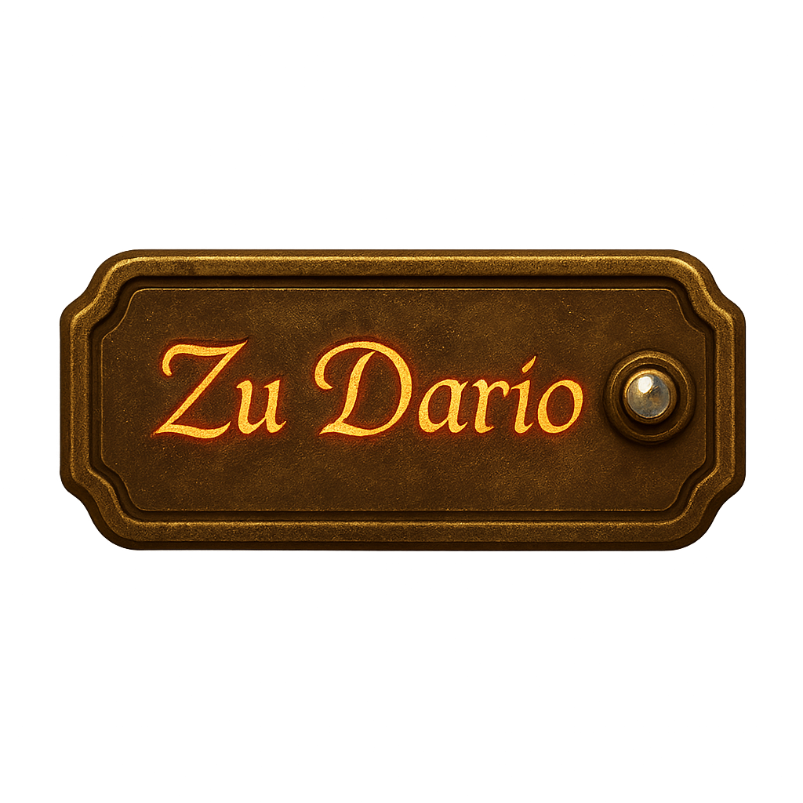

Flügel der Liebe
Flügel des Wissens
Flügel der Gemeinschaft
Flügel der Geschichte
Flügel der Transformation
Philosophie der Harmonys
Harmonius Einstein & Kodex

Harmoniezustand der Welt ansehen — Flügel des Wissens
👋 Klick mich!